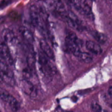

AN INTERACTIVE MACHINE LEARNING EXPLORER
A closer look.
A different prediction.
Run a real tissue classifier in your browser. Explore its predictions, test its limits, and see the evidence behind the model.
Step inside the lab ↓
THE WORKBENCH
Try an experiment
Small changes. Useful questions.
Examples are selected from the reserved test set. Correct examples and a known error are included.
What does the
model see?
A MobileNetV3 image encoder with a tissue classification head trained on this project’s data. Each click runs the exported model on the selected image.
Loading experiment details…
Model score · not a diagnostic probability
For histology tissue patches only. The model assigns one of eight labels even to unfamiliar images, so results can be wrong. Educational research—not medical diagnosis.
How was this measured?
These results come from a same-source image split. Patient identifiers were unavailable, so this is not patient-level or external clinical validation. Demo examples were selected for illustration; the reported test score includes every reserved test image.
Same tissue.
A new perspective.
Training images can be flipped, rotated, or brightened to create more varied examples. Try the transformations used in the notebook.
Processed only in your browser. No prediction is made.
Follow the learning curve.
Move through the epochs to compare training and validation accuracy.
Curves show recorded training and validation results. Validation selects the model; the new model’s separate 154-image test result appears in the Live classifier tab.
ABOUT THIS PROJECT
Learning to see.
Learning to question.
This project explores tissue image classification with convolutional neural networks, image augmentation, and ResNet50 transfer learning. The explorer uses figures and results saved in Anika’s original Colab notebook.
The live classifier is a new model trained for this demo, using a fixed ImageNet-pretrained MobileNetV3 encoder and a trained eight-class head. Its exported weights run locally in your browser.
Explore the eight labels
Category names follow the notebook’s dataset labels.
Sources and limitations
Figures and training logs: Cancer Project notebook ↗. Dataset loading code references the Inspirit AI project dataset. The notebook’s saved split reports 768 training and 256 validation images.
The original ResNet code scaled inputs inconsistently and cast normalized pixels to integers. The new model uses consistent RGB preprocessing with its ImageNet normalization embedded in the exported model. Training, validation, and test images are separated before augmentation, and exact duplicate images are removed before splitting.
This is a student research demonstration, not a diagnostic tool or a clinically validated system.